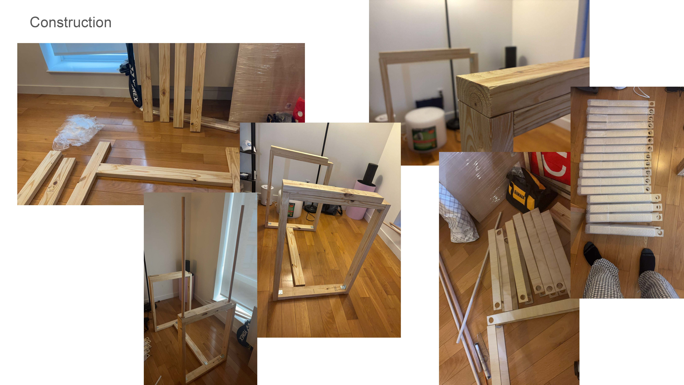
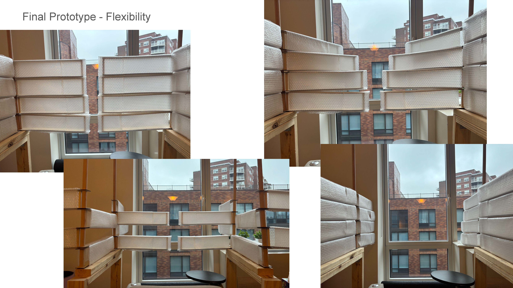
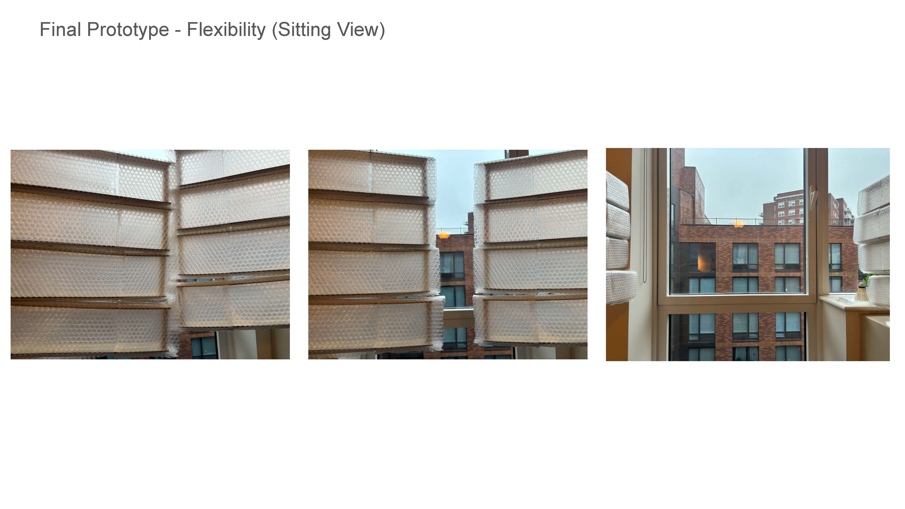

Metatool: Attentional Mediums
Student: Zequan Yu
Instructor: Dan Taeyoung
dan@dantaeyoung.com | dan.taeyoung@columbia.edu
Columbia GSAPP | Fall 2024
Instructor: Dan Taeyoung
dan@dantaeyoung.com | dan.taeyoung@columbia.edu
Columbia GSAPP | Fall 2024







Final Video: https://www.youtube.com/shorts/r8BV8K46NpA
The whole experiment is about upgrading my reading space
The project is focused on attention and flexibility
The project is focused on attention and flexibility